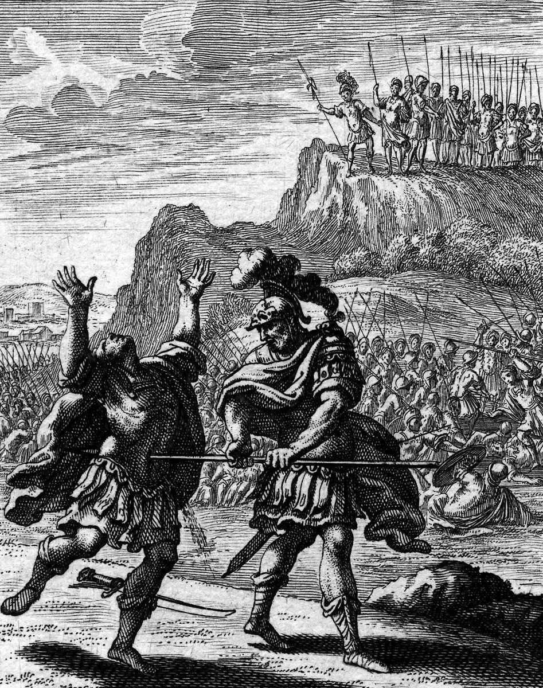

2 Samuel 2 — The Mister Translation

2 Samuel 2:18–23. Asahel, as light of foot as a gazelle, has chased Abner across the field and will not turn aside; Abner, twice warning him, strikes him in the belly with the back end of the spear, so that it comes out behind him. Weigel puts the blow in front of the two armies and shows Abner reversing the spear exactly as the Hebrew says. The soldiers on the height may be read as the Benjamites who gather on the top of one hill (verse 25), though the print does not label them.
_(cropped).jpg){kind=link}
Translator's Notes — verse by verse
Go up, and then Hebron. “And it happened after this that David inquired of Jehovah, saying: ‘Shall I go up to one of the cities of Judah?’ And Jehovah said to him: ‘Go up.’ And David said: ‘Where shall I go up?’ And he said: ‘To Hebron.’”: the same inquiry as at Keilah and at Ziklag (1 Samuel 23:2, 30:8, both already on these pages), where Saul had “asked of Jehovah, and Jehovah did not answer him” (28:6). Here the answer comes in two steps, and the name comes last: first “Go up”, and only when David asks again, “To Hebron”. Hebron is Caleb’s town (Joshua 14:13, already on these pages) and the last place named in David’s gifts from the spoil of Amalek (1 Samuel 30:31, already on these pages). The Greek has David inquire “by the Lord”. The ASV and KJV have “Shall I go up into any of the cities of Judah?”; the NIV “Shall I go up to one of the towns of Judah?”; the NWT 1984 “Shall I go up into one of the cities of Judah?”; the Douay “Shall I go up into one of the cities of Juda?”; the TLB “Shall I move back to Judah?”.
The two wives, and the household. “And David went up there, and his two wives also, Ahinoam the Jezreelitess, and Abigail the wife of Nabal the Carmelite”: the pair of 1 Samuel 25:43, 27:3 and 30:5 (already on these pages), carried off at Ziklag and brought home, and Abigail is still named for her first husband. “And his men who were with him David brought up, each man and his household”: “each man and his household” is the phrase of the stay at Gath (27:3), and “in the cities of Hebron” stands in one verse of the Hebrew Bible, this one. The ASV has “his men that were with him did David bring up, every man with his household: and they dwelt in the cities of Hebron”; the NIV “each with his family, and they settled in Hebron and its towns”; the NWT 1984 “each with his household”; the Douay “they abode in the towns of Hebron”.
Anointed again. “And the men of Judah came, and anointed David there to be king over the house of Judah”: Samuel had anointed him “in the midst of his brothers” (1 Samuel 16:13, already on these pages); this is the second anointing, by Judah, and the third will be by all Israel (2 Samuel 5:3, now on these pages). The anointing is “over the house of Judah” only, and verse 10 repeats the limit. The ASV has “anointed David king over the house of Judah”; the NIV “king over the tribe of Judah”; the NWT 1984 “as king over the house of Judah”; the Douay “to be king over the house of Juda”.
Jabesh-gilead told of. “And they told David, saying: ‘The men of Jabesh-gilead were the ones who buried Saul’”: the report of 1 Samuel 31:11–13 (already on these pages), where the men of Jabesh-gilead burned the bodies and buried the bones; the report says only “buried”. “And David sent messengers”: his first act as king of Judah is a message across the Jordan. The Greek calls the men of Jabesh “the leaders of Jabis” and has David add that they buried “Saul the anointed of the Lord … and Jonathan his son”. The ASV has “were they that buried Saul”; the NIV “the men from Jabesh Gilead who had buried Saul”; the NWT 1984 “were the ones that buried Saul”.
Blessed are you of Jehovah. “‘Blessed are you of Jehovah, because you have done this kindness with your lord, with Saul, and buried him’”: “blessed are you of Jehovah” stands in three verses of the Hebrew Bible, here, Psalm 115:15, and Saul’s words to the Ziphites who had come to tell him where David was (1 Samuel 23:21, already on these pages). David says to Jabesh what Saul said to Ziph. The thing blessed is chesed, kindness, done “with your lord”, and Saul is still “your lord” in verse 5 and again in verse 7, though he is dead. It is the word Jonathan asked of David, “the kindness of Jehovah” (20:14, already on these pages), and David will ask whether any of Saul’s house is left “that I may show him kindness for Jonathan’s sake” (2 Samuel 9:1, now on these pages). The ASV has “Blessed be ye of Jehovah, that ye have showed this kindness unto your lord, even unto Saul”; the KJV “Blessed be ye of the LORD”; the NIV “The Lord bless you for showing this kindness to Saul your master by burying him”; the NWT 1984 “exercised this loving-kindness toward YOUR lord”; the Douay “who have shewn this mercy to your master Saul”; the Geneva “that ye have showed such kindness unto your lord Saul”.
Kindness and truth. “‘And now may Jehovah do kindness and truth with you; and I also will do this good to you, because you have done this thing’”: chesed ve-emet, kindness and truth, the pair the dictionary entry on chesed follows. David promises it twice over, Jehovah’s and his own. The ASV has “show lovingkindness and truth unto you: and I also will requite you this kindness”; the NIV “kindness and faithfulness”; the NWT 1984 “loving-kindness and trustworthiness”; the Douay “mercy and truth”; the Geneva “mercy and truth”.
Be men of valour. “‘And now let your hands be strong, and be men of valour; for your lord Saul is dead, and also the house of Judah have anointed me king over them’”: “let your hands be strong” stands in three verses of the Hebrew Bible, here and Zechariah 8:9 and 8:13; it is the verb of Jonathan, who “strengthened his hand in God” at Horesh (1 Samuel 23:16, already on these pages; see chazaq). “Be men of valour” (livnei chayil) stands in two verses, here and Absalom’s order to his servants (2 Samuel 13:28). The message ends by telling Jabesh, across the Jordan, that Judah has made David king. The Hebrew does not say what he hopes from them. The ASV has “let your hands be strong, and be ye valiant”; the NIV “be strong and brave”; the NWT 1984 “let YOUR hands strengthen themselves and prove yourselves valiant men”; the Douay “Let your hands be strengthened, and be ye men of valour”; the Geneva “let your hands be strong, and be you valiant”.
Abner takes Ish-bosheth. “And Abner son of Ner, the commander of Saul’s army, took Ish-bosheth son of Saul and brought him over to Mahanaim”: Abner is Saul’s uncle and commander (1 Samuel 14:50), the man who did not know whose son David was (17:55), and the man David called to across the valley, “you have not kept watch over your lord the king” (26:15, all already on these pages). The one who failed to guard Saul now makes his son king. “Brought him over” means across the Jordan. Mahanaim is “two camps”, where Jacob met the angels of God (Genesis 32:2, already on these pages); the Douay, from the Latin, turns the name into the common noun, “led him about through the camp”. The ASV has “had taken Ish-bosheth the son of Saul, and brought him over to Mahanaim”; the NIV “the commander of Saul’s army”; the NWT 1984 “the chief of the army that had belonged to Saul”; the TLB “to crown Saul’s son Ish-bosheth as king”.
Ish-bosheth. The name means “man of shame”; Chronicles has Eshbaal, “man of Baal”, for the same son (1 Chronicles 8:33), and the note at Romans 11 (already on these pages) sets this beside Merib-baal and Mephibosheth, where the two names are usually read as one. The lists of Saul’s sons in Samuel do not name him: they have “Jonathan and Ishvi and Malchi-shua” (1 Samuel 14:49) and, at Gilboa, Jonathan, Abinadab and Malchishua (31:2, both already on these pages). The Hebrew does not say whether Ishvi is Ish-bosheth under another name. The Greek writes the name Iebosthe, and says Abner “brought him up from the camp” to Manaem. The ASV has “Ish-bosheth”; the KJV “Ishbosheth”; the NWT 1984 “Ish-boʹsheth”; the Douay “Isboseth”.
The list of lands. “And made him king over Gilead and over the Ashurites and over Jezreel and over Ephraim and over Benjamin and over Israel, all of it”: the list runs from the east of the Jordan to the valley and the hills. The word “Ashurites” is uncertain; some read Asherites, the people of Asher (reported, not verified here), the Greek has “Thasiri” and the Douay “Gessuri”. Jezreel here is the valley, where the Philistines had been settling in the cities Israel left (1 Samuel 31:7, already on these pages); the Hebrew does not say how much of the list Ish-bosheth held, only that Abner made him king over “Israel, all of it” (kullo). The ASV and KJV have “over the Ashurites”; the NIV “Gilead, Ashuri and Jezreel”; the NWT 1984 “and over Israel, all of it”; the TLB “Ashuri”.
Forty years, and two. “Ish-bosheth son of Saul was forty years old when he became king over Israel, and he reigned two years”: in the books of Samuel this formula, “was … years old when he became king”, stands in three verses: Saul’s, with its first number missing (1 Samuel 13:1, already on these pages), this one, and David’s (2 Samuel 5:4, now on these pages). “But the house of Judah followed David”: acharei, “after”, the word the rest of the chapter runs on. Then comes David’s number, “seven years and six months” in Hebron over Judah, and 2 Samuel 5:5 gives the same figure and adds thirty-three years in Jerusalem (now on these pages). Seven and a half years less two is five and a half, and the Hebrew does not say what fills them. The Greek has “except the house of Judah, who were after David”. The ASV has “But the house of Judah followed David”; the NIV “The tribe of Judah, however, remained loyal to David”; the NWT 1984 “Only the house of Judah proved themselves followers of David”; the Douay “only the house of Juda followed David”.
The pool. “And Abner son of Ner, and the servants of Ish-bosheth son of Saul, went out from Mahanaim to Gibeon. And Joab son of Zeruiah, and the servants of David, went out; and they met them at the pool of Gibeon, together”: Gibeon is the town of the Gibeonites who deceived Joshua (Joshua 9:3, already on these pages), and its pool is a rock-cut one that the excavations found. The two sides sit down on either side, “these on one side of the pool, and those on the other side”. Joab is named here for the first time as himself; in the whole of 1 Samuel he is named once, as “Abishai’s brother” (26:6, already on these pages). The Greek has “the spring of Gibeon” for the pool. The ASV has “met them by the pool of Gibeon; and they sat down, the one on the one side of the pool, and the other on the other side”; the NIV “One group sat down on one side of the pool and one group on the other side”; the NWT 1984 “they kept sitting, these on this side of the pool and those on that side”; the TLB “where they sat facing each other on opposite sides of the pool”.
Make sport. “And Abner said to Joab: ‘Let the young men arise, please, and make sport before us’”: sachaq, to play or laugh, the verb of the Philistines who had Samson “make sport” before them in the house of Dagon (Judges 16:25, already on these pages) and of the women who “made merry” singing of Saul’s thousands and David’s ten thousands (1 Samuel 18:7, already on these pages). Here the sport is a duel before the two commanders, and Joab says only “Let them arise”. The Greek has “play”. The ASV and KJV have “arise and play before us”; the NIV “fight hand to hand in front of us”; the NWT 1984 “let them put on a combat before us”; the Douay “rise, and play before us”; the TLB “Let’s watch some sword play between our young men!”.
Twelve against twelve. “And they arose and passed over by number: twelve for Benjamin and for Ish-bosheth son of Saul, and twelve of the servants of David. And each seized his fellow by the head, with his sword in his fellow’s side, and they fell together”: vayachaziqu, “seized”, is the root of “let your hands be strong” in verse 7 (chazaq); the men who were told to be strong take hold of one another. “Together” (yachdav) is the word of Saul and his sons, who died “on that day together” (1 Samuel 31:6, already on these pages). The Hebrew does not say that all twenty-four fell, only that “they fell together”. The ASV has “they caught every one his fellow by the head, and thrust his sword in his fellow’s side; so they fell down together”; the NIV “each man grabbed his opponent by the head and thrust his dagger into his opponent’s side”; the NWT 1984 “grabbing hold of one another by the head, with the sword of each one in the side of the other”; the TLB “so that all of them died”.
Helkath-hazzurim. “And that place was called Helkath-hazzurim, which is in Gibeon”: the name stands in one verse of the Hebrew Bible, and its meaning is not settled. Chelqat is a plot or portion, and hazzurim can be read as “the flints” or “the rocks”, or, with a different vowel, “the adversaries”; the Greek has “the portion of the plotters”, and the Douay “The field of the valiant”. The ASV has “Helkath-hazzurim”; the KJV “Helkathhazzurim”; the NWT 1984 “Helʹkath-haz·zuʹrim”; the TLB “Sword Field”.
Struck down. “And the battle was very hard that day; and Abner and the men of Israel were struck down before the servants of David”: nagaf, the verb of Israel “struck down before the Philistines” at Ebenezer (1 Samuel 4:2, already on these pages); the defeat of Israel is now Israel’s own. Both sides are “servants” (avdei): the servants of Ish-bosheth in verse 12 and the servants of David in verses 13, 15 and 17. The ASV has “Abner was beaten, and the men of Israel, before the servants of David”; the NIV “Abner and the Israelites were defeated by David’s men”; the NWT 1984 “were finally defeated before the servants of David”; the Douay “Abner was put to flight”; the Geneva “fell before the servants of David”.
The sons of Zeruiah. “And the three sons of Zeruiah were there: Joab and Abishai and Asahel”: the sons are named for their mother, as at 1 Samuel 26:6 (already on these pages), and 1 Chronicles 2:16 makes her David’s sister and lists them as Abishai, Joab and Asahel. See Zeruiah, Abishai and Joab. “And Asahel was light of foot, like one of the gazelles that are in the field”: “the gazelles” (ha-tsevayim) stands in one verse of the Hebrew Bible; its singular is the tsevi of David’s lament, “the glory (or the gazelle), O Israel, lies slain” (2 Samuel 1:19, already on these pages), where the word was left open between the two. The Greek has “as one gazelle in the field”. The ASV has “as light of foot as a wild roe”; the NIV “as fleet-footed as a wild gazelle”; the NWT 1984 “swift on his feet, like one of the gazelles that are in the open field”; the Douay “a most swift runner, like one of the roes that abide in the woods”; the TLB “could run like a deer”.
From following. “And Asahel pursued after Abner; and he did not turn to the right or to the left from following Abner”: the phrase “from following” (me-acharei) stands in seven verses of this chapter, verses 19, 21, 22, 23, 26, 27 and 30, and each time it is a man who will not, or must be told to, stop following another. The pair “to the right or to the left” is the law’s way of walking straight (Joshua 1:7, already on these pages); here it is a man who will not leave the man he chases. Abner looks behind him: “Is it you, Asahel?” The ASV and KJV have “in going he turned not to the right hand nor to the left from following Abner”; the NIV “turning neither to the right nor to the left as he pursued him”; the NWT 1984 “he did not incline to go to the right or to the left from following Abner”; the TLB “He wouldn’t stop for anything”.
Not willing. “And Abner said to him: ‘Turn to your right or to your left, and seize one of the young men, and take his spoil for yourself.’ But Asahel was not willing to turn aside from following him”: “his spoil” (chalitsato) stands in one verse of the Hebrew Bible; the versions give it as armour or weapons. “Was not willing” (lo avah) is the refusal of the one who carried Saul’s armour, who “was not willing” to thrust the king through (1 Samuel 31:4, already on these pages); that one refused out of fear, and the text names no reason for Asahel. The ASV has “take thee his armor”; the KJV “take thee his armour”; the NIV “strip him of his weapons”; the NWT 1984 “take what you strip off him as yours”; the Douay “take thee his spoils”.
How could I lift my face? “And Abner said again to Asahel: ‘Turn aside from following me. Why should I strike you down to the ground? And how could I lift up my face to Joab your brother?’”: the second warning gives a reason, and the reason is Joab. The Greek has a longer ending: “and where are these things? turn back to Joab your brother”. The ASV has “how then should I hold up my face to Joab thy brother?”; the NIV “How could I look your brother Joab in the face?”; the NWT 1984 “How, then, could I raise my face to Joʹab your brother?”; the TLB “I could never face your brother Joab if I have to kill you!”.
The back of the spear. “But he refused to turn aside; and Abner struck him with the back end of the spear in the belly, and the spear came out behind him; and he fell there, and died on the spot”: achare ha-chanit, “the back of the spear”, the butt, and el ha-chomesh, “into the belly”. The noun stands in four verses of the Hebrew Bible, all in 2 Samuel: this one, 3:27 (Joab and Abner, now on these pages), 4:6 (the murder of Ish-bosheth), both now on these pages, and 20:10 (Joab and Amasa); see chomesh. The word is uncertain, and the versions split. The Greek has “the loin”. The ASV has “smote him in the body”; the KJV “under the fifth rib”; the NIV “into Asahel’s stomach”; the NWT 1984 “in the abdomen with the butt end of the spear”; the Douay “in the groin”; the TLB “pierced him through the belly with the butt end of his spear”.
They stood still. “And all who came to the place where Asahel had fallen and died stood still”: va-ya’amodu, the verb of the people who stop at Joab’s horn in verse 28, “all the people stood still”. The men stop at the body first and at the horn later. The ASV and KJV have “stood still”; the NWT 1984 “would stand still”; the NIV “every man stopped”; the TLB “everyone stopped when they came to the place where he lay”.
Ammah. “And Joab and Abishai pursued after Abner; and the sun was going down when they came to the hill of Ammah, which is in front of Giah on the way to the wilderness of Gibeon”: “the hill of Ammah” stands in one verse of the Hebrew Bible, and Giah is not named elsewhere either (reported, not verified here). The Benjamites gather behind Abner and “became one band”: the noun aguddah stands in one verse, and in its construct form it is the “bunch” of hyssop at the Passover (Exodus 12:22, already on these pages). They stand “on the top of one hill”; “one band” and “one hill” are both echad. The ASV has “the hill of Ammah, that lieth before Giah”; the NWT 1984 “the hill of Amʹmah, which is in front of Giʹah”; the NIV “They formed themselves into a group”; the KJV “became one troop”; the Douay “the hill of the aqueduct”.
Shall the sword devour for ever? “And Abner called to Joab, and said: ‘Shall the sword devour for ever? Do you not know that it will be bitterness in the end? And how long before you say to the people to turn back from following their brothers?’”: the sword “devours” as in the Song of Moses, “my sword will devour flesh” (Deuteronomy 32:42, already on these pages). Netsach, “for ever”, is the word of “the Everlasting One of Israel” (1 Samuel 15:29, already on these pages), and the Greek has “for victory”. “In the end” is ba-acharonah, from the same root as acharei, “after”. The enemy is called “their brothers”. The ASV and KJV have “Shall the sword devour for ever? knowest thou not that it will be bitterness in the latter end?”; the NIV “Must the sword devour forever? Don’t you realize that this will end in bitterness?”; the NWT 1984 “Is the sword going to eat endlessly?”; the Douay “Shall thy sword rage unto utter destruction?”; the TLB “Must our swords continue to kill each other forever?”.
As God lives. “And Joab said: ‘As God lives, if you had not spoken — for then, from the morning, the people would have withdrawn, each from following his brother’”: “as God lives” stands in one verse of the Hebrew Bible, an oath by ha-Elohim and not by Jehovah. The sentence can be read two ways. If “you had not spoken” points back to Abner’s challenge at the pool, Joab says that without it the men would have gone home at dawn; if it points to Abner’s plea now, he says that without it they would have gone on. The Hebrew has no “until”, and the verb na’aleh can mean “would have been taken up” or “would have withdrawn”. The ASV has “surely then in the morning the people had gone away”; the KJV “unless thou hadst spoken, surely then in the morning the people had gone up every one from following his brother”; the NIV “the men would have continued pursuing them until morning”; the NWT 1984 “only by the morning would the people have been withdrawn”; the Douay “if thou hadst spoke sooner, even in the morning the people should have retired”; the TLB “even if you hadn’t spoken, we would all have gone home tomorrow morning”.
The horn. “And Joab blew the horn, and all the people stood still, and they pursued Israel no more, and did not go on fighting any more”: taqa, to blow, with shofar; “and Joab blew the horn” stands in one verse in this spelling, and Joab blows it again to end a chase at 18:16 and 20:22. The Greek has “the trumpet”. The ASV has “Joab blew the trumpet”; the KJV “Joab blew a trumpet”; the NWT 1984 “Joʹab now blew the horn”; the NIV “Joab blew the trumpet”; the TLB “he blew his trumpet and his men stopped chasing”.
All that night. “And Abner and his men went through the Arabah all that night; and they crossed the Jordan, and went through all the Bithron, and came to Mahanaim”: the Arabah is the rift of the Jordan, and “the Bithron” stands in one verse of the Hebrew Bible, taken as a ravine or as a name. “All that night” is kol ha-laylah ha-hu, the walk of the men of Jabesh to Beth-shan and back (1 Samuel 31:12, already on these pages), and Joab’s men too will go “all night” (verse 32). The Greek has “to the west” for the Arabah and “the whole stretching region” for the Bithron. The ASV has “went all that night through the Arabah”; the KJV “through the plain”; the NIV “marched through the Arabah”; the NWT 1984 “through the entire gully”; the Geneva “past through all Bithron”; the Douay “having gone through all Beth-horon”.
Nineteen and Asahel. “And Joab returned from following Abner, and gathered all the people; and nineteen men of David’s servants were missing, and Asahel. And the servants of David had struck down of Benjamin, and of the men of Abner, three hundred and sixty men; they died”: twenty missing against three hundred and sixty dead, eighteen to one. Asahel is counted last, as the one the count is really about. The ASV has “there lacked of David’s servants nineteen men and Asahel”; the NIV “Besides Asahel, nineteen of David’s men were found missing”; the NWT 1984 “there were missing from the servants of David nineteen men and Asʹa·hel”; the Douay “nineteen men, beside Asael”; the TLB “only nineteen men were missing, in addition to Asahel”.
The tomb of his father. “And they carried Asahel, and buried him in the tomb of his father, which was in Bethlehem. And Joab and his men went all night, and it grew light for them at Hebron”: “in the tomb of his father” stands in two verses of the Hebrew Bible, here and Ahithophel’s burial (2 Samuel 17:23); with the father’s name set into the phrase it is how Gideon and Samson are buried (Judges 8:32, 16:31, already on these pages). Bethlehem is David’s own town (1 Samuel 16:4, already on these pages), and the father’s name is not given. Asahel will be counted among the Thirty (2 Samuel 23:24), and Joab will kill Abner “for the blood of Asahel his brother” (3:27, now on these pages). The Greek has “it dawned on them at Hebron”. The ASV has “the day brake upon them at Hebron”; the KJV “they came to Hebron at break of day”; the NIV “arrived at Hebron by daybreak”; the NWT 1984 “it became daylight for them at Heʹbron”; the Douay “they came to Hebron at break of day”; the TLB “reached Hebron at daybreak”.
Patterns worth carrying forward
Where this translation keeps the words exact and distinct: “inquired of Jehovah”, as in 1 Samuel 23:2 and 30:8; “go up” for alah in verse 1 alike; “each man and his household”, as in 1 Samuel 27:3; “anointed”; “kindness” for chesed in verses 5 and 6; “blessed are you of Jehovah”, as in 1 Samuel 23:21; “let your hands be strong”, with “seized” for the same root in verse 16; “followed” and “from following” for acharei and me-acharei throughout; “make sport” for sachaq, as in Judges 16:25; “struck down” for nagaf, as in 1 Samuel 4:2; “was not willing”, as in 1 Samuel 31:4; “stood still” in verses 23 and 28 alike; “the belly” for chomesh; “blew the horn” for taqa with shofar; “all that night” and “all night”, as in 1 Samuel 31:12; “the tomb of his father”; and “Ish-bosheth” and “Hebron”, “Mahanaim”, “Gibeon” in the forms of the earlier chapters.
Echoes paid. Saul unanswered and David answered at Keilah and Ziklag (1 Samuel 28:6; 23:2; 30:8); Caleb’s Hebron and David’s gifts to it (Joshua 14:13; 1 Samuel 30:31); the two wives (1 Samuel 25:43; 27:3; 30:5); David’s anointing by Samuel (1 Samuel 16:13); the men of Jabesh and Saul’s burial (1 Samuel 31:11–13); Saul’s blessing of the Ziphites (1 Samuel 23:21); Jonathan’s kindness and strengthened hand (1 Samuel 20:14; 23:16); Abner as Saul’s uncle and commander and David’s rebuke of him (1 Samuel 14:50; 17:55; 26:15); Jacob’s two camps (Genesis 32:2); Ishvi and the sons of Saul and Eshbaal (1 Samuel 14:49; 31:2; Romans 11); the Philistines settling the abandoned cities (1 Samuel 31:7); Saul’s number missing (1 Samuel 13:1); Gibeon and the Gibeonites (Joshua 9:3); Joab named as Abishai’s brother (1 Samuel 26:6); Samson’s sport and the women’s merriment (Judges 16:25; 1 Samuel 18:7); Israel struck down before the Philistines (1 Samuel 4:2); Saul and his sons together (1 Samuel 31:6); the gazelle of the lament (2 Samuel 1:19); right and left (Joshua 1:7); the armour-bearer’s refusal (1 Samuel 31:4); the sword that devours (Deuteronomy 32:42); the Everlasting One (1 Samuel 15:29); the bunch of hyssop (Exodus 12:22); the night marches (1 Samuel 31:12); the tombs of Gideon and Samson (Judges 8:32; 16:31); and David’s Bethlehem (1 Samuel 16:4).
Echoes planted. David anointed over all Israel and his reigns of seven years and six months and thirty-three years (2 Samuel 5:3–5, now on these pages); the long war between the house of Saul and the house of David (2 Samuel 3:1, now on these pages); Joab’s killing of Abner in the belly for Asahel’s blood (2 Samuel 3:27, now on these pages); the murder of Ish-bosheth in the belly (2 Samuel 4:6, now on these pages); David’s kindness for Jonathan’s sake (2 Samuel 9:1, now on these pages); Absalom’s “be men of valour” (2 Samuel 13:28); Ahithophel’s tomb (2 Samuel 17:23); Joab’s horn at the end of a chase (2 Samuel 18:16; 20:22); Amasa in the belly (2 Samuel 20:10); Asahel among the Thirty (2 Samuel 23:24); Eshbaal in Chronicles and the three sons of Zeruiah (1 Chronicles 8:33; 2:16); Zechariah’s “let your hands be strong” (Zechariah 8:9, 13); and the blessing of Psalm 115:15. None of the others is translated here yet.
Next in this book: 2 Samuel 3 — the long war between the house of Saul and the house of David; David’s sons born at Hebron; Abner quarrels with Ish-bosheth over Rizpah and goes over to David, and Joab kills him at the gate of Hebron for the blood of Asahel.